SingleCase Outlook Add-in
Zakládejte e-maily do spisů, sledujte, co bylo uloženo, a spravujte dokumenty – vše přímo z Outlooku.
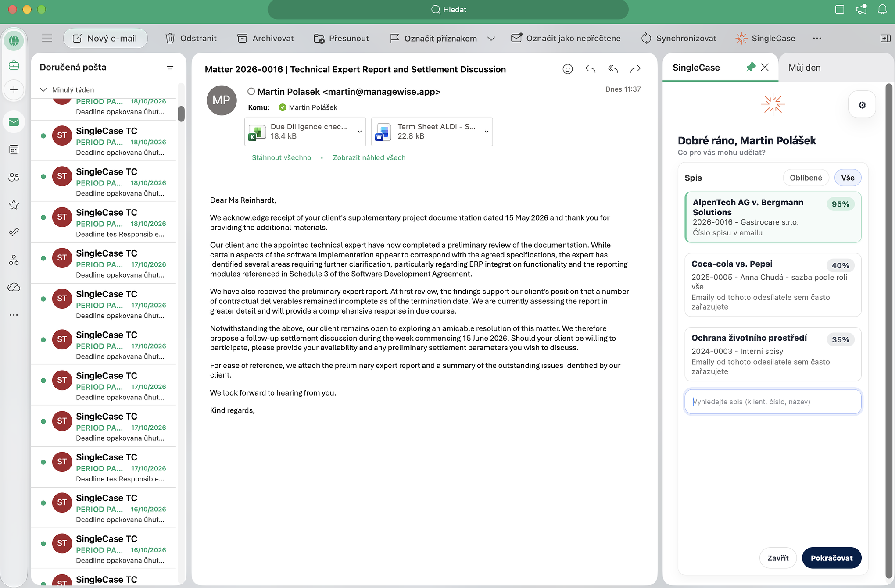

SingleCase Outlook Add-in — panel úloh vedle vaší schránky
Čím chcete začít?
Jste IT správce? Pokračujte na Instalace a aktualizace doplňku nebo do Průvodce nasazením pro organizace.
Klíčové funkce na první pohled
- Funguje všude — Zobrazuje se jako panel na pravé straně Outlooku po otevření e-mailu. Podporováno v Outlooku pro Windows, Mac a Outlooku na webu.
- Vyhledávání a návrhy spisů — Hledejte spis podle klienta, názvu nebo čísla. U e-mailů, které ještě nejsou zařazené, doplněk navrhne nejpravděpodobnější spisy dřív, než začnete psát.
- Plná kontrola nad přílohami — Vyberte, které přílohy se zařadí (ve výchozím stavu všechny), přejmenujte je a zvolte složku spisu, kam se uloží.
-
Přejmenování před uložením — Každou přílohu můžete před nahráním přejmenovat, aby se
scan0001.pdfdostal do spisu pod názvem, který kolegům něco řekne. E-mail v Outlooku zůstává nedotčený. - Přímý přístup k dokumentům — Po zatřízení lze přímo prokliknout na spis nebo jednotlivé dokumenty a jedním klikem otevřít přílohy k editaci – změny se verzují přímo v SingleCase.
- Viditelný stav zařazení — Zařazené e-maily dostanou v Outlooku kategorii SC: Filed, viditelnou na všech vašich zařízeních. Pokud už e-mail zařadil kolega, doplněk ho po otevření ukáže jako zařazený.
- Upozornění na duplicity — Doplněk vás upozorní, než zařadíte e-mail, který už zařazený je.
- Přihlášení jen jednou — Žádné opakované přihlašování. Stačí jednorázová autorizace přes Microsoft SSO a doplněk vás udržuje přihlášené automaticky.
- Hromadné nasazení přes IT — Nasaďte doplněk pro všechny uživatele najednou přes M365 Admin Center. Aktualizace probíhají automaticky na pozadí – bez nutnosti přeinstalace.
Co doplněk umí
Doplněk SingleCase pro Outlook propojuje Outlook se SingleCase. Umožňuje ukládat e-maily a jejich přílohy do správného spisu, aniž byste opustili Outlook.
Doplněk se otevírá jako panel v pravé části Outlooku. Můžete ho používat dvěma způsoby:
- Při otevření e-mailu (režim čtení): doplněk zkontroluje, jestli už je e-mail zařazený, navrhne pravděpodobný spis a zařadí e-mail s přílohami, které vyberete.
- Při psaní e-mailu (režim psaní): spis vyberete ještě před odesláním a doplněk e-mail po kliknutí na Odeslat zařadí, automaticky nebo po vašem potvrzení.
Zařazení přijatých i odeslaných e-mailů
Vyberte spis a zařaďte otevřený e-mail z doručené pošty, Odeslané pošty nebo jakékoli jiné složky.
Zařazení při odeslání
Spis vyberete už při psaní. E-mail se zařadí po kliknutí na Odeslat, takže se nemusíte vracet do Odeslané pošty.
Návrhy spisů
Doplněk navrhuje pravděpodobné spisy podle vlákna e-mailu, čísel spisů a spisových značek v e-mailu a vaší historie zařazování.
Kontrola nad přílohami
Vyberte, které přílohy zařadit, přejmenujte je před zařazením a zvolte složku, kam se uloží.
Stav zařazení v Outlooku
Zařazené e-maily dostanou štítek SC: Filed na všech vašich zařízeních a doplněk vás upozorní, než e-mail zařadíte podruhé.
Otevření zařazených dokumentů
Otevřete spis nebo kterýkoli zařazený dokument v SingleCase, případně dokument k úpravám, přímo z panelu.
Doplněk funguje v Outlooku pro Windows, Outlooku pro Mac a v Outlooku na webu. Které verze jsou podporované, najdete v článku Podporované platformy.
Získání doplňku
Před použitím SingleCase musí být doplněk přítomen ve vašem Outlooku. Existují dva způsoby:
Nebo nainstalujte sami (veřejná verze — dostupná v marketplace Microsoft AppSource):
-
Otevřete Outlook a klikněte na ikonu Aplikace v pásu karet.
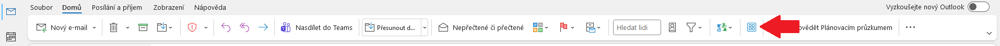
Pás karet Outlooku – klikněte na ikonu Aplikace (zvýrazněna).
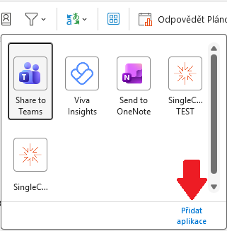
V panelu, který se zobrazí, klikněte na Přidat aplikace.
-
Otevře se dialogové okno Další aplikace. Zadejte SingleCase do vyhledávacího pole a stiskněte Enter.
-
Klikněte na Přidat vedle položky SingleCase.
-
Doplněk je nainstalován. SingleCase se zobrazí pod záložkou Vytvořeno pro vaši organizaci a tlačítko se objeví v pásu karet při příštím otevření e-mailu.
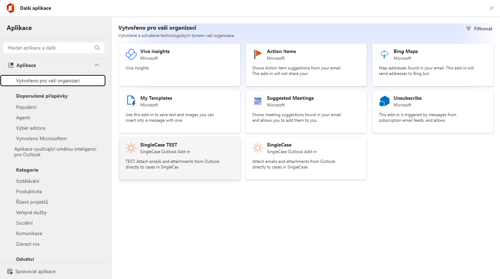
SingleCase zobrazený pod záložkou Vytvořeno pro vaši organizaci po úspěšné instalaci.
Restartujte Outlook — tlačítko by se mělo zobrazit automaticky při příštím spuštění.
-
Otevřete Outlook a přejděte na: nabídka Nástroje → Získat doplňky.
-
Otevře se dialogové okno Další aplikace. Zadejte SingleCase do vyhledávacího pole a stiskněte Enter.
-
Klikněte na Přidat vedle položky SingleCase.
-
Doplněk je nainstalován. SingleCase se zobrazí pod záložkou Vytvořeno pro vaši organizaci a tlačítko se objeví v pásu karet při příštím otevření e-mailu.
- Klikněte na … (nabídka přetečení s třemi tečkami) na pravém konci pásu karet a zvolte Přizpůsobit panel nástrojů…

Klikněte na … v pásu karet a zvolte Přizpůsobit panel nástrojů…
- V dialogovém okně Přizpůsobit panel nástrojů najděte SingleCase v části Nainstalované doplňky na pravé straně a přetáhněte jej do hlavní oblasti panelu nástrojů na levé straně.
- Klikněte na Hotovo pro uložení změn.

Přetáhněte SingleCase ze seznamu nainstalovaných doplňků do panelu nástrojů.
-
Otevřete libovolný e-mail v Outlooku na webu. Na pravé straně e-mailu se zobrazí malý panel aplikací. Klikněte na Přidat aplikace v dolní části tohoto panelu.
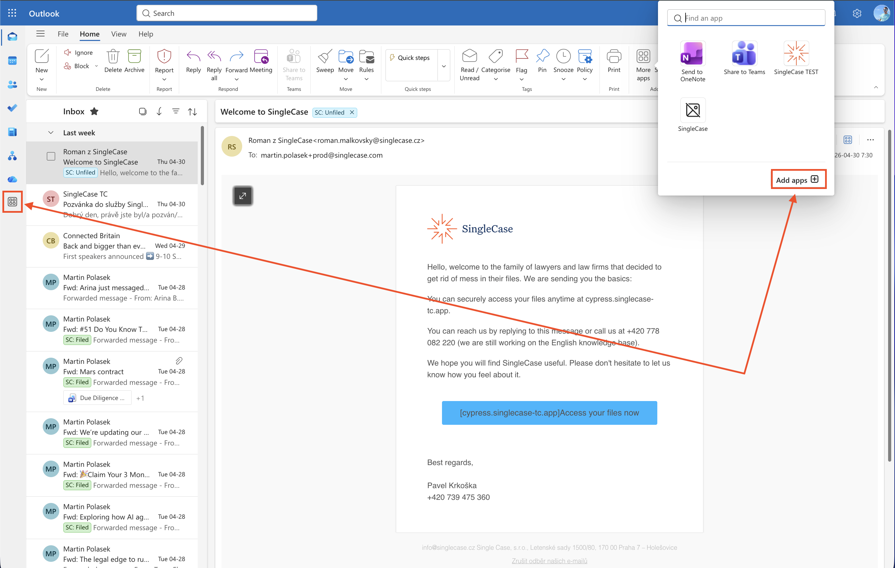
Klikněte na Přidat aplikace v panelu aplikací na pravé straně e-mailu.
-
Otevře se obchod Aplikace. Zadejte SingleCase do vyhledávacího pole nahoře a stiskněte Enter.
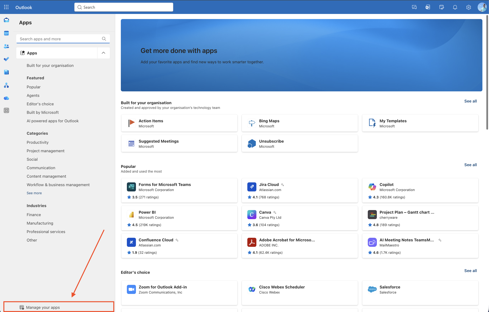
Vyhledejte SingleCase v obchodě Aplikace.
-
Klikněte na výsledek SingleCase a poté klikněte na Otevřít pro instalaci doplňku.
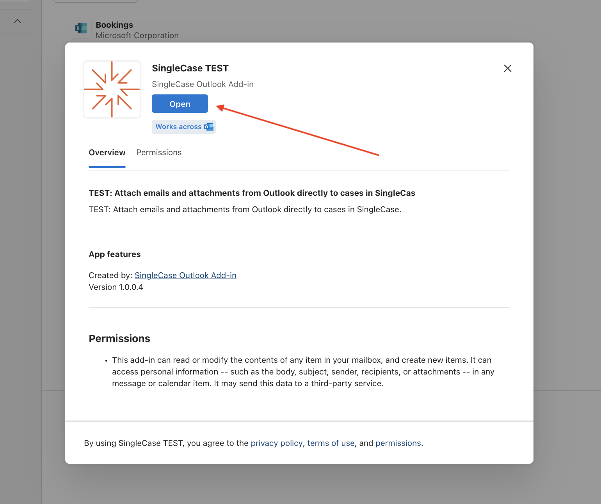
Klikněte na Otevřít pro instalaci SingleCase.
Otevření doplňku
Otevřete e-mail a klikněte na tlačítko SingleCase na pásu karet pro otevření panelu.

Žádný e-mail — tlačítko zašedlé

E-mail vybrán — doplněk dostupný
Udržení panelu otevřeného: klikněte na ikonu připnutí (📌) v pravém horním rohu panelu, aby zůstal viditelný při procházení e-mailů. Outlook sleduje stav připnutí odděleně pro čtení a psaní — v každém kontextu může být nutné připnout jednou.
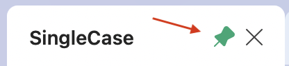
Ikona připnutí v záhlaví panelu — kliknutím udržíte panel otevřený.
Stav připnutí se resetuje při restartu Outlooku — jedná se o známé omezení platformy.
Otevřete libovolný e-mail. Ikona SingleCase se zobrazí v panelu nástrojů e-mailu vpravo nahoře — klikněte na ni pro otevření panelu.
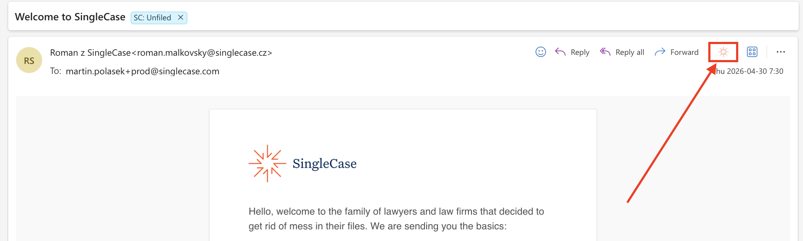
Ikona SingleCase v panelu nástrojů e-mailu — klikněte pro otevření panelu.
Udržení panelu otevřeného: klikněte na ikonu připnutí v pravém horním rohu záhlaví panelu (vedle tlačítka ×) pro zachování viditelnosti při přepínání mezi e-maily.
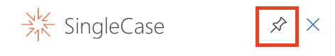
Ikona připnutí v záhlaví panelu — zde zobrazena v připnutém stavu.
Stav připnutí se resetuje při zavření Outlooku nebo odhlášení — jedná se o známé omezení platformy.
Přihlášení a výběr workspace
První otevření
Toto stačí provést pouze jednou. Po nastavení vás doplněk udržuje přihlášené automaticky.
-
Zadejte adresu URL pracovního prostoru. Na uvítací obrazovce zadejte adresu pracovního prostoru SingleCase (například
vasefirma.singlecase.app). Pokud si nejste jisti adresou, klikněte na Otevřít pracovní prostor a vyhledejte ji v prohlížeči.
Zadejte adresu pracovního prostoru na uvítací obrazovce.
-
Přihlášení Microsoft (může se zobrazit jednou). Může se krátce zobrazit přihlašovací okno Microsoft — žádná akce není potřeba, okno se samo zavře.

Přihlašovací okno Microsoft.
Přihlášení a automatická obnova
Doplněk používá stejný účet, který již používáte pro Outlook. Pokud jste přihlášeni do Outlooku, jste automaticky přihlášeni i do SingleCase — žádné heslo, žádné další kroky.
Ruční přihlášení může být vyžadováno v těchto situacích:
- Používáte starší verzi Outlooku, která tiché přihlášení nepodporuje. V takovém případě se zobrazí tlačítko — klikněte na něj a přihlaste se přes vyskakovací okno:Přihlásit se přes Microsoft
- Vaše organizace vyžaduje dodatečný souhlas s novým oprávněním. Zpráva vás provede jednorázovým krokem.
Přepnutí workspace
Pro připojení k jinému workspace SingleCase otevřete Nastavení, klikněte na Změnit workspace a zadejte adresu nového workspace.
Podporované platformy
Doplněk SingleCase vyžaduje Outlook připojený k Exchange Online (předplatné Microsoft 365 nebo samostatný Exchange Online). Lokální Exchange (on-premises) není podporován.
| Platforma | Verze / Režim | Podporováno | Poznámky |
|---|---|---|---|
| Windows | Outlook (M365) — klasický nebo nový Outlook | ✓ Ano | Plně podporováno. Vyžaduje verzi 2206 (Build 15330+) nebo novější. Dokumentace ↗ |
| Outlook 2021 (trvalá licence — retail) | ✓ Ano | Plně podporováno při aktuální instalaci. | |
| Outlook 2021 LTSC (multilicence) | ✗ Ne | Podporuje API doplňků pouze do verze 1.9; tento doplněk vyžaduje 1.12. Přejděte na M365. |
|
| Outlook 2019 | ✗ Ne | Podporuje API doplňků pouze do verze 1.6. Přejděte na M365 nebo Outlook 2021 (retail). |
|
| Outlook 2016 | ✗ Ne | Není podporováno. Prosím aktualizujte. |
|
| Mac | Outlook pro Mac M365, Nový Outlook (v16.38.506+) | ✓ Ano | Plně podporováno. Vyžaduje Nový Outlook. Dokumentace ↗ |
| Outlook pro Mac M365, Legacy Outlook | ✗ Ne | Legacy Outlook podporuje API doplňků pouze do verze 1.8; tento doplněk vyžaduje 1.12. V Outlooku vypněte přepínač Legacy Outlook pro přechod na Nový Outlook. | |
| Outlook pro Mac pod verzí 16.38.506 | ✗ Ne | Aktualizujte Outlook na nejnovější verzi přes Nápověda → Vyhledat aktualizace. | |
| Web | Outlook na webu (Exchange Online) | ✓ Ano | Plně podporováno na outlook.office.com. |
| Mobil | Outlook iOS / Android | ⟳ Brzy | Podpora mobilních zařízení bude brzy k dispozici. |
Ověřit verzi Outlooku
Nevíte, zda je váš Outlook kompatibilní? Vyberte platformu a vložte řetězec verze níže.
Najdete v Nápověda → O aplikaci Outlook. Vložte celý řetězec, např. Version 2306 (Build 16.0.16529.20164)
Zařazení e-mailu
Doplněk zařadí e-mail, který máte otevřený: přijatý e-mail z doručené pošty, nebo odeslaný e-mail ze složky Odeslaná pošta. Vždy zařadí jen tento jeden e-mail, ne celou konverzaci. Pokud potřebujete v SingleCase i další e-maily ze stejného vlákna, zařaďte každý zvlášť.
-
Otevřete e-mail, který chcete zařadit, v doručené poště, v Odeslané poště nebo v jiné složce.
-
Otevřete panel SingleCase z pásu karet, pokud ještě není otevřený (viz Otevření doplňku).
-
Podívejte se, co panel ukazuje. Doplněk nejdřív zkontroluje, jestli už e-mail zařazený není.
- Už zařazený: panel ukáže spis a zařazené dokumenty. Nic dalšího není potřeba.
- Zatím nezařazený: panel se zeptá „Tento email ještě není zařazen. Chcete ho zařadit?“ Klikněte na Ano, zařadit.

Doplněk se zeptá, jestli chcete e-mail zařadit.
-
Vyberte spis. Navržené spisy jsou nahoře v seznamu a jakýkoli jiný spis můžete vyhledat. Viz Vyhledání spisu a Návrhy spisů.

Vyhledejte spis podle klienta, názvu nebo čísla.
-
Zvolte, co zařadit. Vyberte přílohy, cílovou složku a případně nové názvy souborů. Viz Výběr příloh, složky a názvu.

Vyberte přílohy, které se zařadí spolu s e-mailem.
-
Klikněte na Pokračovat. Doplněk nahraje vybrané soubory do SingleCase a zobrazí shrnutí. E-mail v Outlooku dostane štítek SC: Filed. Viz Po zařazení.
Výběr příloh, složky a názvu
Po výběru spisu doplněk ukáže, co se zařadí. Samotný e-mail se zařadí vždy, jako soubor .eml. Pokud má e-mail přílohy, můžete navíc vybrat, které z nich zařadit, přejmenovat je a zvolit složku, kam se uloží. Pokud e-mail přílohy nemá, tyto možnosti se nezobrazí a tlačítko Pokračovat e-mail rovnou zařadí.

Výběr příloh
V části Přílohy k zařazení má každá příloha zaškrtávací políčko a ve výchozím stavu jsou vybrané všechny. Zrušte zaškrtnutí u těch, které nepotřebujete. Pokud má e-mail víc než jednu přílohu, tlačítkem Vybrat vše / Zrušit výběr přepnete všechny najednou. Z jednoho e-mailu můžete zařadit nejvýše 50 příloh.
Až budete připraveni, klikněte na Pokračovat.
Přejmenování přílohy před zařazením
Přílohy často přicházejí s názvy, které ve spisu nic neříkají, například scan0001.pdf nebo IMG_4821.jpg. Přílohu můžete před zařazením přejmenovat, aby se v SingleCase objevila pod názvem, kterému kolegové porozumí.
-
Klikněte na ikonu tužky vedle přílohy.
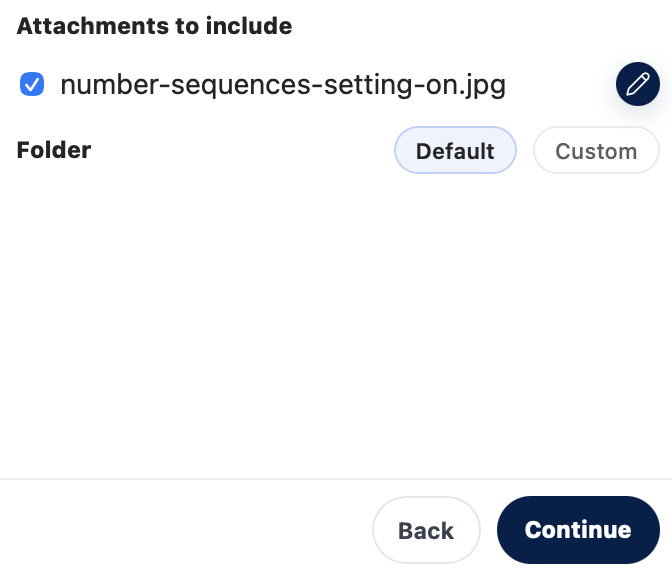
Kliknutím na tužku vedle přílohy ji přejmenujete.
-
Napište nový název a stiskněte Enter, nebo klikněte mimo pole. Klávesou Esc změnu zahodíte.
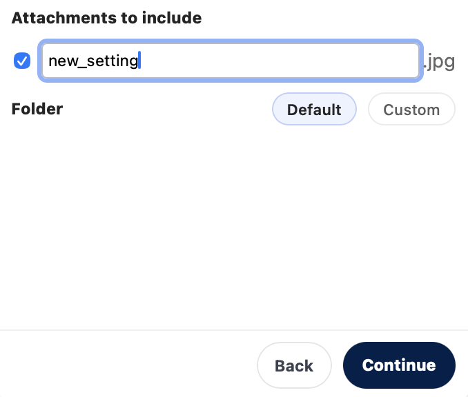
Měnit lze jen název. Přípona zůstává stejná.
-
Klikněte na Pokračovat. Příloha se zařadí pod novým názvem a doplněk ho bude ukazovat při každém dalším otevření e-mailu.
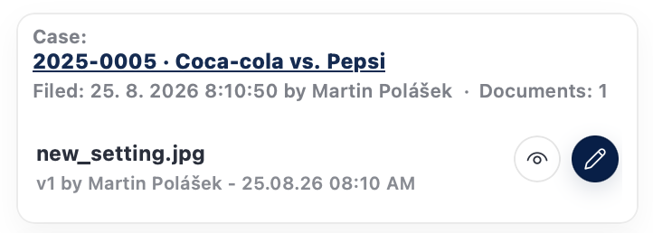
Shrnutí zařazení ukazuje dokument pod názvem, který jste mu dali.
- Příponu změnit nelze, takže z
.pdfzůstane.pdf. - Prázdný název nic nezmění. Příloha si ponechá původní název.
- Dvě přílohy se stejným názvem přejmenovat nelze. Jejich ikona tužky je neaktivní a zobrazí „Přílohu se stejným názvem jako jiná příloha nelze přejmenovat“.
- E-mail v Outlooku zůstane beze změny. Nový název dostane jen kopie v SingleCase.
Výběr cílové složky
Pod přílohami je řádek Složka se dvěma možnostmi:
- Výchozí (předvybraná): přílohy se uloží do výchozí složky spisu pro příchozí poštu, Korespondence → Přijaté.
- Vlastní: zvolíte libovolnou složku ve spisu.
Při volbě Vlastní se pod řádkem zobrazí složky spisu. Kliknutím složku otevřete. Složka, ve které jste, je vybraná: zobrazuje se nahoře v seznamu se zaškrtnutím (✓). Složky s podsložkami mají šipku (→). O úroveň výš se vrátíte kliknutím na vybranou složku nahoře v seznamu (↵).

Zaškrtnutí ukazuje složku, do které se přílohy uloží.
.eml) se vždy uloží do Pošty spisu. Vidíte jen složky, které můžete v SingleCase otevřít.Po zařazení: otevření spisu a dokumentů
Po dokončení uložení panel zobrazí souhrn:
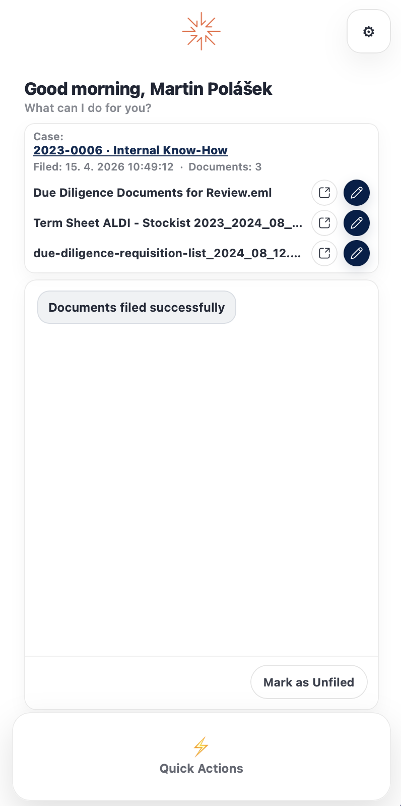
Souhrnné zobrazení po úspěšném uložení.
- Název spisu (kliknutím otevřete spis v SingleCase)
- Datum a čas uložení
- Počet uložených dokumentů
- Každý uložený dokument uveden samostatně
Ze souhrnu můžete také spravovat každý dokument:
| Akce | Co dělá |
|---|---|
| Otevřít spis v SingleCase | Otevře spis, do kterého byl e-mail uložen, v SingleCase |
| Otevřít dokument v SingleCase | Otevře uložený dokument přímo v SingleCase |
| Upravit přes SingleCase | Otevře dokument v SingleCase k úpravám |
Kde najdete uložené položky v SingleCase
Po uložení najdete e-mail a přílohy přímo ve spisu v SingleCase.
E-mail — Pošta spisu
Uložený e-mail se zobrazí v sekci Pošta spisu daného spisu.


Uložený e-mail je viditelný v Poště spisu.
Přílohy — Dokumenty
Vybrané přílohy jsou uloženy v sekci Dokumenty spisu. Při výchozím nastavení složky míří do Doručených ve spisu, tedy do Korespondence → Přijaté. Pokud jste před uložením zvolili jinou složku (viz Výběr cílové složky), najdete je v ní.
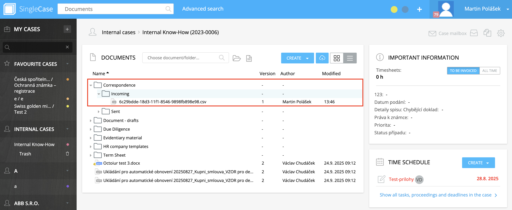
Uložené přílohy se zobrazí v Dokumentech pod Korespondence → Přijaté.
Zařazené, přeskočené a odstraněné e-maily
Po otevření e-mailu doplněk nejdřív zkontroluje jeho stav v SingleCase. Podle výsledku panel zobrazí jednu z následujících situací.
Už zařazený
Panel ukáže spis a zařazené dokumenty. Funguje to stejně, ať jste e-mail zařadili sami, zařadil ho kolega, nebo se zařadil při odeslání. E-mail v Outlooku zároveň dostane štítek SC: Filed. Co můžete dělat dál, popisuje článek Po zařazení.
Zatím nezařazený
Panel se zeptá „Tento email ještě není zařazen. Chcete ho zařadit?“
- Ano, zařadit otevře výběr spisu. Viz Zařazení e-mailu.
- Ne nechá e-mail nezařazený. Panel potvrdí „Rozumím. Tento email teď nezařadím.“ a na tento e-mail se znovu zeptá až po dalším otevření panelu.
Interní e-maily
Pokud jsou odesílatel i všichni příjemci z e-mailové domény vaší organizace (včetně jejích subdomén), panel se zeptá „Toto mi připadá jako interní email. Označit jako přeskočené?“ Rozpoznání probíhá automaticky, žádné nastavení pro něj není.
- Ano označí e-mail jako přeskočený. E-mail dostane štítek SC: Skipped a panel zobrazí „Označeno jako přeskočené. Stále ho můžete zařadit ručně.“
- Přesto zařadit otevře výběr spisu stejně jako u jakéhokoli jiného e-mailu.
Přeskočené e-maily
Když otevřete e-mail označený jako přeskočený, panel zobrazí „Tento email je označen jako přeskočený. Stále ho můžete zařadit ručně.“ Kliknutím na Zařadit ručně ho zařadíte do spisu.
Odstraněné ze SingleCase
Pokud byl e-mail zařazen, ale jeho dokumenty se v SingleCase později smazaly, panel zobrazí „Email byl odstraněn ze SingleCase. Chcete ho zařadit znovu?“ Klikněte na Ano, zařadit, pokud ho chcete zařadit znovu, nebo na Ne.
Opětovné zařazení stejného e-mailu
Pokud zařazujete e-mail, který už zařazený je, panel zobrazí „Tento email už byl zařazen. Klikněte znovu pro potvrzení.“ Klikněte znovu, jen pokud ho opravdu chcete zařadit podruhé.
Přesun zařazených e-mailů do složek spisů
Zařazené e-maily běžně zůstávají v doručené poště jen se štítkem SC: Filed. Pokud chcete mít doručenou poštu čistou, doplněk může každý zařazený e-mail hned po zařazení přesunout do složky jeho spisu.
Zapnutí
Otevřete Nastavení (ikona ozubeného kola v panelu doplňku).
V části Organizace e-mailů zapněte přepínač Přesunout zatříděné e-maily do složky v Outlooku. Text pod ním zní: „Po zatřízení e-mailu do SingleCase ho doplněk automaticky přesune do složky SingleCase - Plugin → [název spisu] ve vašem Outlooku.“
Nastavení se vám uloží a zůstane zapnuté i po zavření a opětovném otevření doplňku. Když ho vypnete, další e-maily se už nepřesouvají; e-maily, které už byly přesunuté, zůstanou ve složkách spisů.
Jak jsou složky uspořádané
Doplněk vytvoří na nejvyšší úrovni vaší schránky, vedle Doručené pošty, složku SingleCase - Plugin. V ní je pro každý spis jedna složka s názvem číslo spisu · název spisu:
SingleCase - Plugin 2024-0003 · Ochrana životního prostředí 2025-0010 · Smith vs. Jones 2026-1348 · Jednorázový paušál
- Obě složky se vytvoří automaticky: SingleCase - Plugin při prvním přesunu e-mailu a složka spisu při prvním zařazení e-mailu do daného spisu.
- Pokud spis nemá číslo, složka se jmenuje jen podle názvu spisu.
- Znaky
/,\a:v názvech spisů se nahradí pomlčkou a velmi dlouhé názvy se zkrátí. - Složky jsou ve vaší schránce, takže je v Outlooku uvidíte na všech svých zařízeních.
Které e-maily se přesouvají
- Jen e-maily, které zařadíte doplňkem, a to v okamžiku zařazení. Žádného jiného e-mailu ve schránce se doplněk nedotkne.
- E-mail se přesune, nekopíruje. Zmizí ze složky, kde byl, a objeví se ve složce spisu, stále se štítkem SC: Filed.
- E-maily zařazené před zapnutím nastavení zůstanou, kde jsou. Zpětně se nic nepřesouvá.
Když se e-mail přesunout nepodaří
Zařazení má vždy přednost. Pokud se přesun nepodaří, e-mail je v SingleCase přesto zařazený, zůstane v původní složce a doplněk vás na to upozorní. Přesunout ho pak můžete ručně.
Přejmenování, přesunutí nebo smazání složek
Doplněk hledá složku spisu podle jejího názvu uvnitř SingleCase - Plugin (na velikosti písmen nezáleží). Pokud složku spisu přejmenujete, přesunete jinam nebo smažete, při dalším zařazení e-mailu do daného spisu se vytvoří nová složka se standardním názvem. Totéž platí pro samotnou složku SingleCase - Plugin.
Zařazení při odeslání
Při zařazení při odeslání vyberete spis už během psaní e-mailu. Po kliknutí na Odeslat doplněk odeslaný e-mail do tohoto spisu zařadí za vás, podle nastavení buď automaticky, nebo po vašem potvrzení. Nemusíte se pak vracet do složky Odeslaná pošta.
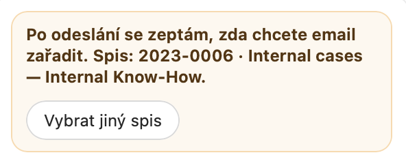
Během psaní panel ukazuje spis a co se stane po kliknutí na Odeslat.
Nastavte si chování při odeslání
Otevřete Nastavení doplňku (viz Přehled všech nastavení) a v položce Zařazení při odeslání zvolte jednu z možností:
| Možnost | Během psaní | Po kliknutí na Odeslat |
|---|---|---|
| Upozornit pokaždé (výchozí) | Panel je zvýrazněný žlutě a zobrazuje text „Po odeslání se zeptám, zda chcete email zařadit.“ | E-mail se normálně odešle. Při dalším otevření panelu doplňku se zobrazí otázka „Email odeslán. Chcete ho zařadit?“ spolu s názvem spisu. Klikněte na Zařadit nyní, nebo na Přeskočit, pokud ho zařadit nechcete. Dokud nekliknete na Zařadit nyní, nic se nezařadí. |
| Vždy zařadit | Panel zobrazuje text „Po kliknutí na Odeslat email automaticky zařadím.“ a po výběru spisu zezelená. | E-mail se automaticky na pozadí zařadí do vybraného spisu. Žádné potvrzení není potřeba. |
| Vypnuto | Panel zobrazuje text „Automatické zařazování je vypnuté.“ Tlačítkem Zapnout upozornění přepnete nastavení na Upozornit pokaždé. | Nic se nezařadí. E-mail můžete zařadit ručně ze složky Odeslaná pošta (viz Zařazení e-mailu). |
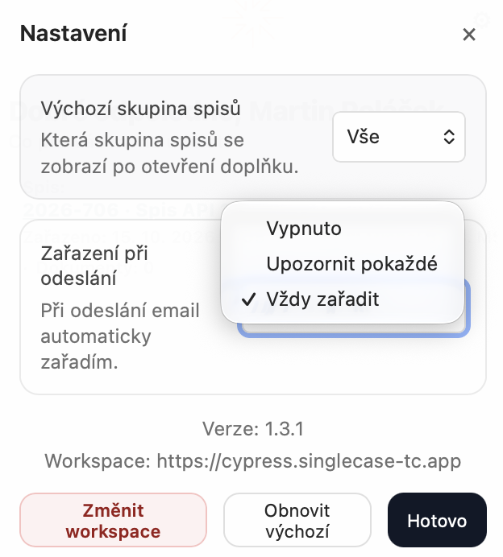
Chování zvolíte v Nastavení u položky Zařazení při odeslání.
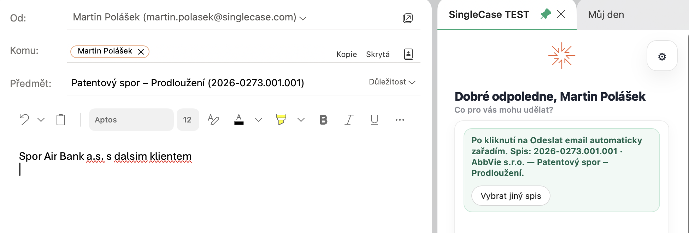
V režimu Vždy zařadit panel po výběru spisu zezelená.
Jak na to
-
Otevřete nový e-mail nebo odpověď a kliknutím na tlačítko SingleCase v pásu karet otevřete panel. Spis musí být v panelu vybraný ještě před odesláním. Pokud e-mail odešlete bez otevření panelu, při odeslání se nic nezařadí a e-mail můžete zařadit později ze složky Odeslaná pošta.
-
Doplňte příjemce. Dokud není v poli Komu nebo Kopie alespoň jeden příjemce, panel zobrazuje „Přidejte příjemce (Komu / Kopie)“. Pokud e-mail posíláte na e-mailovou adresu spisu v SingleCase, spis se rozpozná okamžitě.
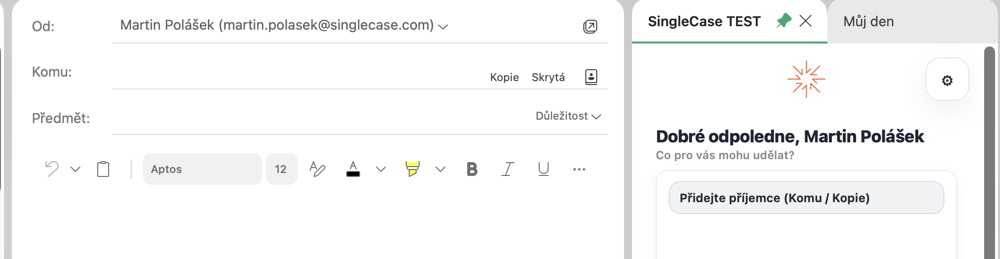
Dokud e-mail nemá příjemce, panel vás vyzve k jeho přidání.
-
Zkontrolujte spis. Panel ukazuje, do kterého spisu se e-mail zařadí. Pokud není správný, klikněte na Vybrat jiný spis a vyberte jiný ze seznamu nebo ho vyhledejte. Pokud doplněk nic nenavrhne, panel zobrazí „Vyberte spis pro tento koncept.“ Klikněte na Vybrat spis a spis zvolte.
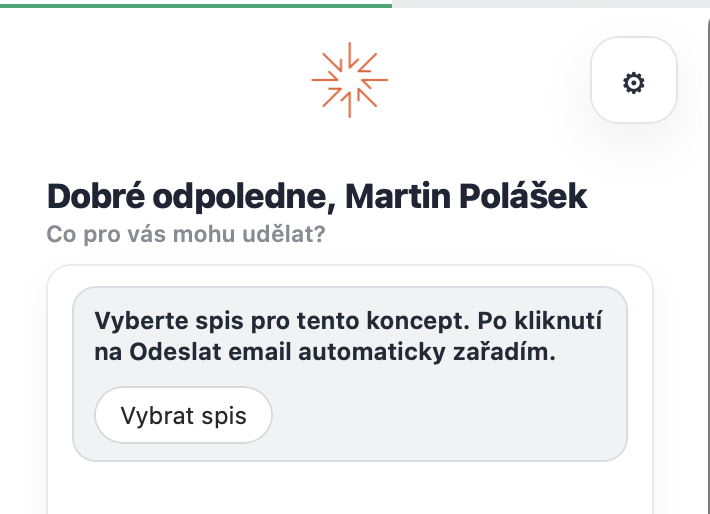
Zatím žádný návrh: klikněte na Vybrat spis.
-
Pokračujte v psaní nebo panel zavřete. Vybraný spis zůstává u tohoto konceptu až do odeslání.
-
Klikněte na Odeslat. E-mail se vždy odešle. V režimu Vždy zařadit se zařadí na pozadí. V režimu Upozornit pokaždé se vás doplněk zeptá při dalším otevření panelu.
Jak doplněk vybírá spis
Během psaní doplněk rozhoduje, který spis připraví, v tomto pořadí:
- Spis, který jste vybrali sami, má vždy přednost.
- E-mailová adresa spisu mezi příjemci: pokud e-mail posíláte na e-mailovou adresu spisu v SingleCase, tento spis se vybere.
- Automatické rozpoznání: pokud e-mail patří do vlákna, které už je zařazené, předmět nebo text obsahuje číslo spisu, nebo adresa příjemce přesně odpovídá spisu, spis se vybere a panel zobrazí „Navržený spis: …“.
- Příjemci, se kterými jste už e-maily zařazovali: pokud jste dříve zařazovali e-maily se stejnými lidmi do určitého spisu, tento spis se nabídne v seznamu pod Vybrat jiný spis. Automaticky se nevybere.
V seznamu pod Vybrat jiný spis je u každého návrhu uvedeno, proč byl nabídnut, například „Stejné vlákno emailu“, „Číslo spisu v emailu“, „Emaily od tohoto odesílatele sem často zařazujete“ nebo „Nedávno použitý spis“.
Více o řazení spisů najdete v článku Návrhy spisů a o adresách spisů v článku Odeslání na e-mailovou adresu spisu.
Co se zařadí?
Odeslaný e-mail se uloží jako dokument do kořene dokumentů vybraného spisu. Výběr příloh, cílové složky a přejmenování (viz Výběr příloh, složky a názvu) nejsou při zařazení při odeslání k dispozici. Pokud je potřebujete, spis v konceptu nevybírejte a e-mail po odeslání zařaďte ručně ze složky Odeslaná pošta (viz Zařazení e-mailu).
Pokud panel zobrazí „Po odeslání ho můžete zařadit ze složky Odeslané.“, doplněk nedokázal tento koncept na zařazení připravit. E-mail se normálně odešle, ale při odeslání se nic nezařadí. Zařaďte ho ručně ze složky Odeslaná pošta.
Kdy použít zařazení při odeslání a kdy ruční zařazení
| Situace | Doporučený způsob |
|---|---|
| Víte předem, do jakého spisu e-mail patří | Zařazení při odeslání: vyberte spis před odesláním a ušetříte krok |
| Odpovídáte na e-mail, který je již zařazený ve spisu | Zařazení při odeslání: doplněk vybere stejný spis automaticky |
| Chcete vybrat přílohy, složku nebo název dokumentu | Ruční zařazení ze složky Odeslaná pošta po odeslání (viz Zařazení e-mailu) |
Odeslání na e-mailovou adresu spisu
Každý spis v SingleCase má vlastní e-mailovou adresu ve tvaru ID-SPISU@vasefirma.singlecase.app. Když tuto adresu přidáte mezi příjemce e-mailu, který píšete, obvykle do Skrytá kopie, aby ji ostatní příjemci neviděli, doplněk spis okamžitě rozpozná.
- Spis se v panelu vybere bez vyhledávání a panel ho uvede.
- Adresa spisu se považuje za jistou. Má přednost před všemi návrhy; přednost před ní má jen spis, který vyberete sami.
- Co se stane po kliknutí na Odeslat, určuje nastavení Zařazení při odeslání.
Po odeslání: potvrzení a chyby
Výsledek se zobrazí nahoře v panelu doplňku při jeho dalším otevření, bez ohledu na to, který e-mail máte zrovna vybraný:
- Zařazeno: „Odeslaná zpráva byla zatříděna do spisu [spis].“ Zpráva zůstane, dokud ji nezavřete. Pokud e-mail skončil v nesprávném spisu, klikněte na Změnit spis a spis se otevře v SingleCase. Přesunout už zařazený e-mail do jiného spisu doplněk neumí.
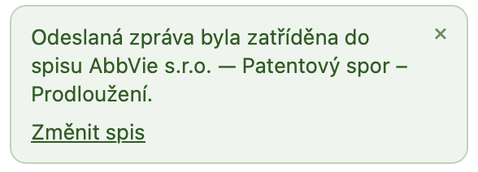
Potvrzení zůstane, dokud ho nezavřete.
- Už zařazeno jinde: pokud je stejný e-mail už zařazený v jiném spisu, znovu se nezařadí a zpráva uvede, ve kterém spisu už je.
- Nezdařilo se: „Zatřídění se nezdařilo. Otevřete doplněk znovu, nebo zatřiďte ručně.“ Zobrazí se, když zařazení nemůže uspět, například když nemáte oprávnění zařazovat do daného spisu nebo vypršelo vaše přihlášení k Microsoftu. Dočasné potíže, jako výpadek sítě, se nehlásí. Doplněk to prostě zkusí znovu při dalším otevření panelu.
- Čeká na potvrzení (Upozornit pokaždé): pokud na otázku neodpovíte, zobrazí se znovu při každém otevření panelu po dobu 24 hodin. Poté e-mail zůstane nezařazený. Pokud jste odeslali více e-mailů, doplněk se ptá postupně, od nejstaršího.
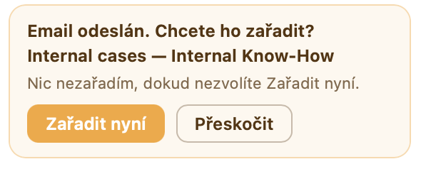
V režimu Upozornit pokaždé se doplněk před zařazením zeptá.
Vyhledání spisu
Seznam spisů má dvě zobrazení, mezi kterými přepínáte tlačítky nahoře: Vše a Oblíbené. Které se otevře jako první, určuje Nastavení (Výchozí skupina spisů, výchozí je Vše).
Vyhledání spisu
V zobrazení Vše doplněk ukáže navržené spisy a pod nimi vyhledávací pole. Napište alespoň 3 znaky; výsledky se zobrazují průběžně a při posouvání dolů se načítají další. U každého výsledku je název spisu, číslo spisu a klient. Klávesou Enter vyberete první výsledek, klávesou Esc hledání vymažete.
Celé názvy psát nemusíte; fungují i části slov a můžete je kombinovat:
| Co napíšete | Příklad | Výsledek |
|---|---|---|
| Název klienta (nebo jeho část) | nextpresso | Spisy tohoto klienta |
| Název spisu (nebo jeho část) | magenta | Spisy s tímto názvem |
| Číslo spisu | 2025-100 | Daný spis |
| Klient + název spisu | nextpresso magenta | Daný spis u daného klienta |
| Kombinace částí slov | next mag | Odpovídající klient a spis |
Oblíbené
Oblíbené zobrazuje spisy, které máte v SingleCase označené hvězdičkou. Návrhy a vyhledávací pole jsou jen v zobrazení Vše; v Oblíbených vybíráte spis ze seznamu.
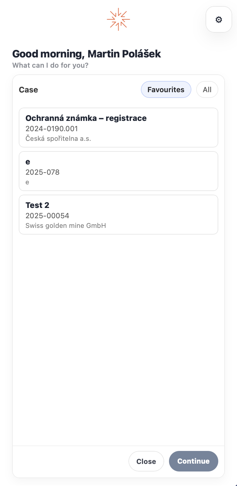
Mezi zobrazeními Vše a Oblíbené přepínáte tlačítky nahoře.
Návrhy spisů
Když zařazujete otevřený e-mail, doplněk se SingleCase zeptá, do kterých spisů e-mail nejspíš patří, a nad vyhledávacím polem ukáže až tři návrhy (v zobrazení Vše).
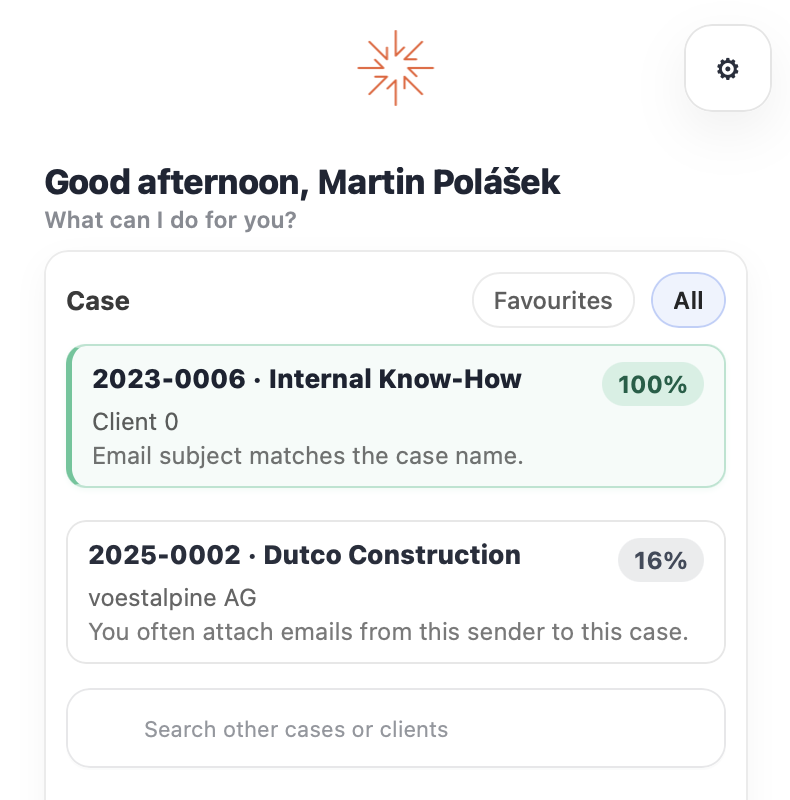
Navržené spisy s mírou jistoty a důvodem návrhu.
Co návrh ukazuje
- Název spisu a pod ním číslo spisu a klienta.
- Míru jistoty v procentech.
- Hlavní důvod návrhu: „Stejné vlákno emailu“, „Číslo spisu v emailu“, „Emaily od tohoto odesílatele sem často zařazujete“, „Emaily z této organizace se obvykle zařazují sem“, „Propojený kontakt“, „Nedávno použitý spis“ nebo „Navržená shoda“.
Co doplněk zohledňuje
SingleCase kombinuje několik vodítek. Každé vodítko spisu přidává body, takže spis, který splňuje víc z nich, je výš. Od nejsilnějšího po nejslabší:
Stejné vlákno. Jiný e-mail z této konverzace už je do spisu zařazený.
Číslo spisu SingleCase v předmětu, v prvních 5 000 znacích textu nebo v názvu přílohy. Musí se shodovat jako celé číslo, ne jako část delšího čísla.
Spisová značka soudu na stejných místech. Na oddělovačích nezáleží, takže
23-C-159,23/C/159i23 C 159se shodují.Vaše historie s těmito adresami. Jak často a jak nedávno jste e-maily s odesílatelem a příjemci do spisu zařazovali.
Historie organizace. E-maily ze stejné e-mailové domény zařazené do spisu. Počítá se mnohem méně než přesná adresa, a tím méně, čím víc spisů doména má. Doména vaší firmy a veřejné domény jako gmail.com se nezohledňují.
Propojené kontakty. Účastník e-mailu odpovídá aktivnímu kontaktu propojenému se spisem v SingleCase. Pokud je kontakt propojený s více spisy, body se mezi ně rozdělí, takže kontakt na mnoha spisech o žádném z nich mnoho neříká. Kontakt propojený jen s jedním spisem má přednost před slabou historií odesílatele, ale zavedená historie (časté a nedávné zařazování) má přednost před ním.
Nedávno použité spisy. Spisy, do kterých jste zařazovali za posledních 14 dní. Rozhoduje jen mezi spisy, které už našla jiná vodítka.
Číslo spisu nebo spisová značka v e-mailu má vždy přednost před samotnou historií zařazování.
Míra jistoty
Procento odráží, jak silná vodítka jsou a jak daleko je spis před dalším v pořadí. Pokud mají dva spisy stejně silná vodítka, oba dostanou nižší procento. Jediné vodítko, ani přesné číslo spisu, nedosáhne 100 %. Spisy pod 10 % se nezobrazují.
Doporučený spis
Když je první spis jasně napřed, doplněk ho označí jako doporučený zeleným rámečkem a můžete rovnou kliknout na Pokračovat. Počítají se přitom jen silná vodítka: stejné vlákno, číslo spisu nebo spisová značka, nebo vaše historie s těmito adresami. Historie organizace a propojené kontakty samy o sobě spis doporučeným neudělají. Dokud nekliknete na Pokračovat, nic se nezařadí, a vždy můžete vybrat jiný spis.
Návrhy jsou osobní
Návrhy vycházejí ze spisů, ke kterým máte přístup, a z vaší vlastní historie zařazování, takže kolega může u stejného e-mailu vidět jiné návrhy. Každý zařazený e-mail zlepšuje další návrhy pro stejné lidi a organizace.
Stav zařazení v Outlooku
Doplněk používá kategorie Outlooku k zobrazení stavu uložení každého e-mailu na první pohled. Tyto štítky se zobrazují ve složce Doručená pošta, Odeslaná pošta a v jakékoli složce, kde se e-mail nachází, a synchronizují se na všech vašich zařízeních.
| Štítek | Význam |
|---|---|
| SC: Filed | E-mail byl úspěšně uložen v SingleCase |
| SC: Skipped | E-mail zatím není přiřazen k žádnému případu v SingleCase. |
Přehled všech nastavení
Nastavení otevřete kliknutím na ikonu ozubeného kola (⚙) v pravém horním rohu panelu doplňku. Zavřete ho tlačítkem Hotovo nebo křížkem × vpravo nahoře.

Kliknutím na ozubené kolo otevřete Nastavení.
| Nastavení | Možnosti | Co dělá | Kde se uplatní |
|---|---|---|---|
| Výchozí skupina spisů | Vše (výchozí), Oblíbené | Ve kterém zobrazení se seznam spisů otevře. Oblíbené jsou spisy označené v SingleCase hvězdičkou. Návrhy a vyhledávání jsou jen ve Vše. Viz Vyhledání spisu. | Oba režimy |
| Zařazení při odeslání | Upozornit pokaždé (výchozí), Vždy zařadit, Vypnuto | Zda se odeslaný e-mail zařadí automaticky, po vašem potvrzení, nebo vůbec. Viz Zařazení při odeslání. | Režim psaní |
Nastavení doplňku.
Ve spodní části Nastavení:
- Verze a Workspace ukazují verzi doplňku a workspace, ke kterému jste připojeni. Při kontaktu s podporou uveďte obojí.
- Změnit workspace připojí doplněk k jinému workspace SingleCase. Viz Přihlášení a výběr workspace.
- Obnovit výchozí vrátí výchozí nastavení.
Časté dotazy
Zařazování e-mailů
Jak poznám, že byl e-mail již uložen?
Otevřete e-mail a klikněte na tlačítko SingleCase. Pokud byl e-mail uložen, panel okamžitě zobrazí název spisu, datum uložení a odkazy na uložené dokumenty. Zelený štítek SC: Filed ve složce Doručená pošta také indikuje, že e-mail je v SingleCase.
Můžu stejný e-mail zařadit dvakrát?
Doplněk vás nejdřív upozorní: „Tento email už byl zařazen. Klikněte znovu pro potvrzení.“ Podruhé ho zařadí, jen pokud kliknete znovu. Viz Zařazené, přeskočené a odstraněné e-maily.
Co se stane, pokud uložím e-mail a poté ho přepošlu?
Přeposílání vytvoří zcela nový e-mail. Přeposlaná kopie se automaticky neuloží. Pokud je to potřeba, musíte otevřít doplněk pro přeposlanou kopii a uložit ji samostatně.
Vynechal jsem některé přílohy. Změní se tím původní e-mail?
Ne. Doplněk v Outlooku nemění e-mail ani jeho přílohy; jen přidá kategorii SC: Filed. Do SingleCase se nahrají jen soubory, které jste vybrali.
Omylem jsem uložil špatný e-mail. Co mám dělat?
Uložení nelze vrátit z doplňku. Chcete-li odebrat chybně uložený dokument, přejděte na SingleCase → Spisy → Dokumenty, najděte dokument a odstraňte ho odtud. E-mail v Outlooku zůstane zcela nezměněn.
Proč je kategorie e-mailu v angličtině?
Názvy kategorií SC: Filed a SC: Skipped jsou stejné ve všech jazycích, bez ohledu na jazyk Outlooku.
Spisy a návrhy
Mezi návrhy nevidím spis, který potřebuji. Co mám dělat?
Návrhy ukazují nejvýše tři spisy; jsou zkratkou, ne omezením. Použijte vyhledávací pole pod návrhy (v zobrazení Vše) a hledejte podle názvu klienta, názvu spisu nebo čísla spisu. Klávesou Enter vyberete první výsledek.
Pokud nic nenajde ani vyhledávání, zkontrolujte postupně:
- Zkuste kratší část názvu. Části slov fungují, ale dlouhý název s překlepem ne.
- Zkontrolujte workspace. Pokud má vaše firma víc workspace SingleCase, můžete být přihlášeni k jinému. Viz Přihlášení a výběr workspace.
- Zkontrolujte, že jste na spisu. Vyhledávání najde spisy, u kterých jste odpovědnou osobou nebo členem. Požádejte odpovědnou osobu spisu, aby vás v SingleCase přidala.
- Nově vytvořený spis? Obnovte panel (pravým tlačítkem do panelu → Znovu načíst) a hledejte znovu.
Doplněk doporučil nesprávný spis. Co mám dělat?
Doporučený spis je jen návrh. Dokud nekliknete na Pokračovat, nic se nezařadí, takže jednoduše vyberte nebo vyhledejte jiný spis. Doplněk spis doporučí, když je jasně napřed díky stejnému vláknu, číslu spisu nebo spisové značce v e-mailu, nebo vaší historii s těmito adresami. Číslo se ale může oprávněně objevit i v e-mailu, který patří jinam, například v přeposlaném vlákně.
Zařazení do správného spisu zlepší další návrhy pro stejné lidi. Viz Návrhy spisů.
Proč u některých e-mailů nevidím žádné návrhy?
To je normální a vyhledávací pole je vždy k dispozici. Návrhy zůstanou prázdné, když není z čeho vycházet:
- Žádný jiný e-mail z vlákna není zařazený a v předmětu, prvních 5 000 znacích textu ani v názvech příloh není číslo spisu nebo spisová značka.
- S těmito lidmi ani touto organizací jste e-maily dosud nezařazovali. Veřejné domény jako gmail.com a doména vaší firmy se do historie organizace nepočítají.
- Všechny spisy dostaly méně než 10 %, což je minimum, které doplněk zobrazí.
Přihlášení, aktualizace a dostupnost
Odhlásí mě doplněk automaticky?
Obvykle ne. Doplněk vás udržuje přihlášené a relaci automaticky obnovuje na pozadí, takže se nemusíte přihlašovat při každém otevření Outlooku. Pokud vás přece jen odhlásí, například po změně hesla, přihlaste se znovu na úvodní obrazovce. Pro připojení k jinému workspace použijte Změnit workspace v Nastavení.
Jak získám nejnovější verzi doplňku?
Doplněk se aktualizuje automaticky. Protože funguje jako webová aplikace v Outlooku, správce publikuje nové verze do Microsoft 365 a vy vždy obdržíte nejnovější verzi při příštím otevření Outlooku. Nemusíte nic instalovat ručně.
Pokud potřebujete načíst novou verzi ihned bez restartu Outlooku, můžete panel doplňku vynutit znovu načíst:
- Outlook pro Mac: klikněte pravým tlačítkem kdekoliv v panelu SingleCase → Znovu načíst.
- Outlook pro Windows: klikněte pravým tlačítkem kdekoliv v panelu SingleCase → Znovu načíst.
- Outlook na webu (Mac): klikněte do panelu a stiskněte Cmd+Shift+R.
- Outlook na webu (Windows): klikněte do panelu a stiskněte Ctrl+Shift+R.
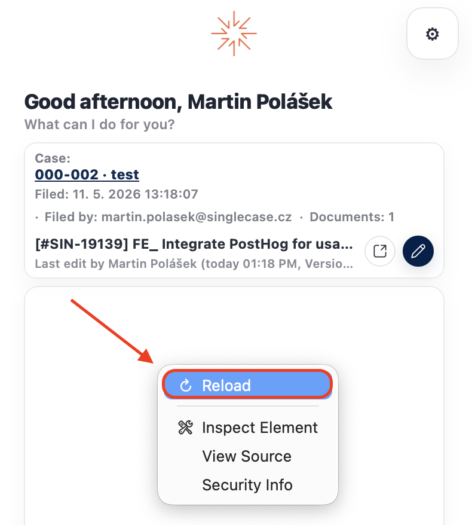
Klikněte pravým tlačítkem v panelu a zvolte Znovu načíst pro okamžité načtení nejnovější verze.
Nainstalovanou verzi si můžete ověřit v části Moje doplňky v Outlooku:
- Outlook na webu: otevřete libovolný e-mail → klikněte na nabídku tří teček (⋯) → Získat doplňky → Moje doplňky. Najděte SingleCase v seznamu. Verze je zobrazena pod názvem doplňku.
- Outlook pro Mac: nabídka Nástroje → Získat doplňky → záložka Moje doplňky.
- Outlook pro Windows: Soubor → Správa doplňků (otevře stránku v prohlížeči) → záložka Moje doplňky.
Při hlášení problému uveďte číslo verze, aby vám váš IT administrátor nebo podpora SingleCase mohla pomoci.
Mohu doplněk používat na telefonu?
Zatím ne. Podpora pro mobilní zařízení (iOS a Android) bude brzy k dispozici. O dostupnosti vás budeme informovat.
Funguje doplněk offline?
Ne. Doplněk potřebuje pro komunikaci se SingleCase připojení k internetu. Bez připojení se zobrazí chyba připojení. Jakmile budete znovu online, zařaďte e-mail znovu.
Řešení problémů
Nelze se přihlásit — Microsoft hlásí, že účet v tenantovi SingleCase neexistuje
Kliknete na přihlášení a zobrazí se okno Microsoftu Vyberte účet s červenou zprávou:
Vybraný uživatelský účet v tenantovi SingleCase neexistuje a nemá v něm přístup k aplikaci. Nejdříve je nutné účet přidat do tenanta jako externího uživatele. Použijte prosím jiný účet.

Přihlášení se zastaví zde. Opakovaný výběr téhož účtu zprávu jen zobrazí znovu.
Nejde o problém s heslem a nevyřešíte ho z Outlooku. Doplněk vás přihlašuje přes Microsoft, takže váš profil v SingleCase musí vědět, který účet Microsoft vám patří. Dokud toto propojení neexistuje, nemá Microsoft k čemu přístup udělit a zobrazí uvedenou zprávu. Řešením je propojení v SingleCase vytvořit — nebo vytvořit znovu:
Otevřete svůj pracovní prostor SingleCase v prohlížeči a přihlaste se běžným způsobem.
Přejděte do Můj profil a najděte sekci propojení účtu Microsoft.
-
Pokud není propojen žádný účet — propojte ho. Přihlaste se stejným účtem Microsoft, který používáte v Outlooku, a potvrďte dotaz na oprávnění. Ve většině případů to chybu vyřeší.
-
Pokud už je nějaký účet propojen — zrušte stávající propojení a vytvořte ho znovu. Propojení může přestat platit, například po změně e-mailové adresy, změně licence nebo migraci mezi tenanty Microsoftu — a neplatné propojení vede ke stejné chybě jako žádné.
Vraťte se do Outlooku, zavřete a znovu otevřete panel SingleCase a přihlaste se.
Panel úloh je prázdný nebo nekonečně zobrazuje načítání
Zavřete panel úloh a znovu ho otevřete z pásu karet.
Pokud to nepomůže, restartujte Outlook.
V Outlooku na webu zkuste obnovit stránku prohlížeče.
Pokud problém přetrvává, kontaktujte svého IT administrátora. Doplněk může být nutné znovu publikovat.
„Workspace nenalezen“ při přihlášení
Doplněk zobrazí zprávu, že workspace nenašel. Zkontrolujte adresu workspace. Správný formát je vasefirma.singlecase.app. Pokud si nejste jisti, požádejte svého správce SingleCase o přesnou adresu.
Kategorie po uložení (zelené/šedé štítky) se nezobrazují
Kategorie vyžadují specifickou minimální verzi Outlooku. Ujistěte se, že je váš Outlook zcela aktuální. V Outlooku na webu může zobrazení kategorií po uložení trvat několik sekund.
Spis, který hledám, není v seznamu
- Přepněte z Oblíbené na Vše. Vyhledávací pole je jen v zobrazení Vše.
- Vyhledejte podle čísla spisu (např.
2023-0001). - Vyhledávání najde jen spisy, u kterých jste odpovědnou osobou nebo členem. Požádejte odpovědnou osobu spisu, aby vás v SingleCase přidala.
- Spis vytvořený před chvílí se může objevit až po obnovení: klikněte pravým tlačítkem do panelu a zvolte Znovu načíst.
Chyba „Uložení selhalo"
Selhání uložení je obvykle způsobeno krátkým přerušením sítě nebo dočasným problémem serveru. Po několika sekundách to zkuste znovu. Pokud chyba přetrvává, ověřte, zda můžete otevřít pracovní prostor SingleCase v prohlížeči. Pokud je pracovní prostor dostupný, ale uložení stále selhává, kontaktujte podporu SingleCase.
Novinky
Připravujeme pro verzi 1.4
- Přesun zařazených e-mailů do složek spisů. Volitelné nastavení, které každý zařazený e-mail přesune do složky SingleCase - Plugin → spis v Outlooku. Viz Přesun zařazených e-mailů do složek spisů.
Verze 1.3.1.0 · říjen 2026
- Novinka: zařazení při odeslání. Vyberte spis už při psaní e-mailu a doplněk ho po kliknutí na Odeslat zařadí, automaticky nebo po vašem potvrzení. Viz Zařazení při odeslání.
Instalace a aktualizace doplňku
Nasaďte SingleCase pro celou organizaci – nebo pro konkrétní uživatele či skupiny. Vyžaduje účet Globálního správce nebo Správce aplikací. Uživatelé obdrží doplněk automaticky v pásu karet Outlooku bez jakékoliv akce z jejich strany.
-
Přihlaste se do Centra pro správu Microsoft 365 na adrese admin.microsoft.com.
-
V levém postranním panelu přejděte na Nastavení → Integrované aplikace.
-
Klikněte na Nahrát vlastní aplikace pro nasazení přes soubor manifestu, nebo vyhledejte SingleCase v obchodě s aplikacemi a vyberte jej.
- Při nahrávání manifestu: vyberte Doplněk pro Office jako typ aplikace a nahrajte soubor manifestu.
-
V kroku Přidat uživatele vyberte rozsah nasazení:
- Jen já — pouze váš účet (vhodné pro testování)
- Celá organizace — všichni uživatelé ve vašem tenantovi M365
- Konkrétní uživatelé / skupiny — definovaný seznam nebo skupina zabezpečení
-
Klikněte na Nasadit a potvrďte. Šíření může trvat až 24 hodin — z naší zkušenosti většinou do 12 hodin.
-
Tlačítko SingleCase se automaticky zobrazí v pásu karet každého přiřazeného uživatele při příštím spuštění Outlooku.
Kompletní průvodce nasazením s obrázky →
Aktualizace manifestu
Pokud SingleCase poskytne nový soubor manifestu (například při přechodu z Trial na Production nebo při změně URL doplňku), nahradíte jej v Centru pro správu bez nutnosti odstraňovat stávající nasazení. Vždy aktuální soubory manifestů jsou dostupné v Průvodci pro IT administrátory → Soubory manifestu ↗.
-
Přejděte na Nastavení → Integrované aplikace v Centru pro správu Microsoft 365 a vyberte ze seznamu doplněk SingleCase. V panelu, který se otevře, klikněte v části Actions na Update add-in.

Panel s detailem doplňku — klikněte na Update add-in v části Actions.
-
Na obrazovce Update file nechte vybranou možnost Upload manifest file (.xml) from device, klikněte na Choose File a vyberte nový manifest. Vyčkejte, než se zobrazí Manifest file validated, a klikněte na Next.

Nahrajte nový manifest ze svého zařízení — než budete pokračovat, musí se zobrazit zelené potvrzení Manifest file validated.
-
Zkontrolujte obrazovku Updates, která uvádí oprávnění a funkce vyžadované novým manifestem, a klikněte na Accept and update.

Zkontrolujte požadovaná oprávnění a funkce a poté klikněte na Accept and update.
-
Aktualizace se provede. Během zpracování se zobrazuje Update in progress… — panel můžete zavřít, aktualizace pokračuje na pozadí.

Aktualizace se provádí na pozadí.
-
Hlášení Updated successfully potvrzuje, že je nový manifest nasazen. Klikněte na Done. Přiřazení uživatelů se přenese — není třeba nikoho přiřazovat znovu.

Potvrzení, že byl manifest aktualizován pro všechny přiřazené uživatele.
Protože je SingleCase nasazen jako doplněk pro firmu (LOB), musí administrátor pro změny metadat nahrát nový manifest výše uvedeným postupem — doplněk se pak aktualizuje při dalším spuštění Outlooku.
Nejčastější dotazy k centralizovanému nasazení Microsoft ↗